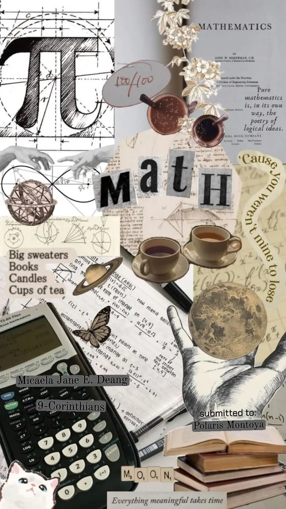
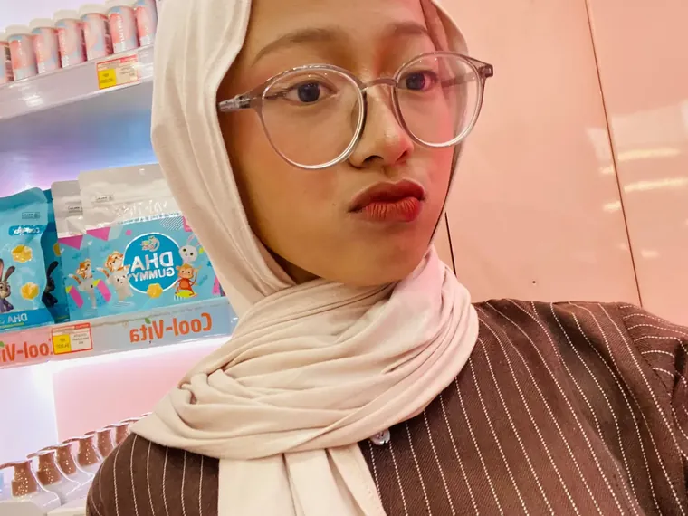
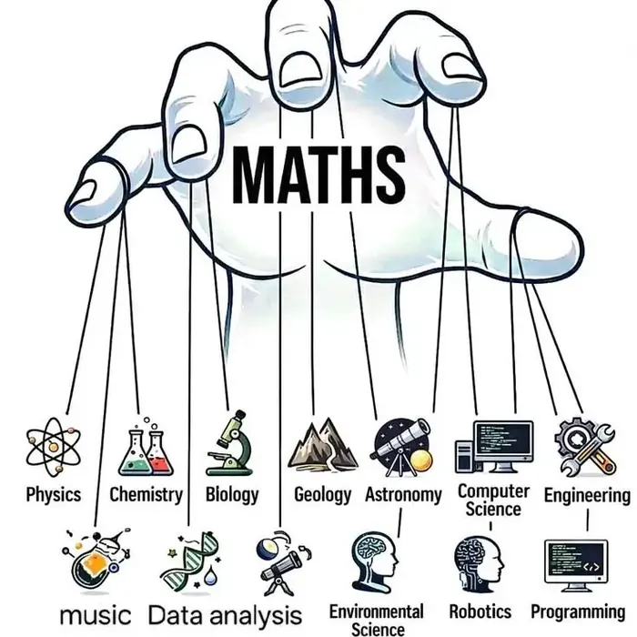
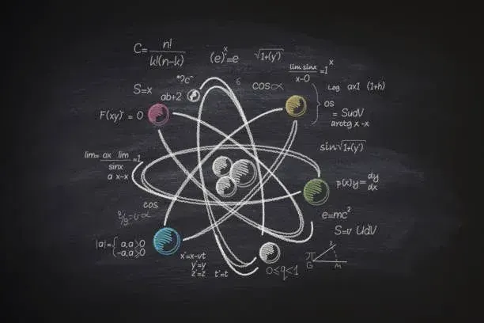
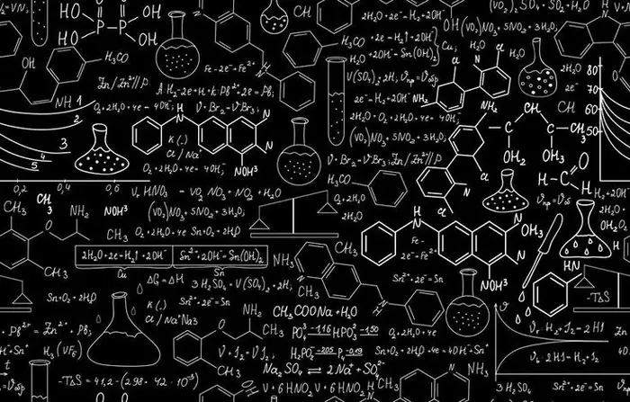
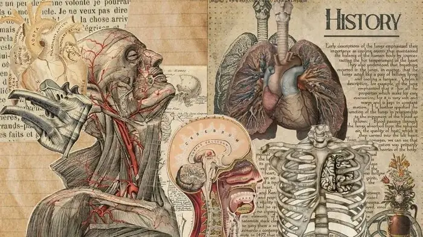
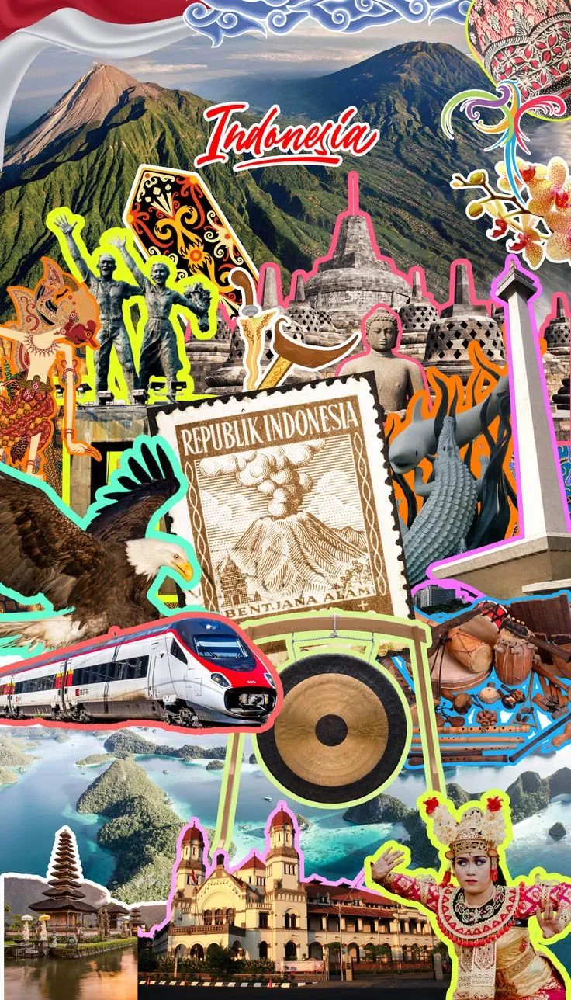
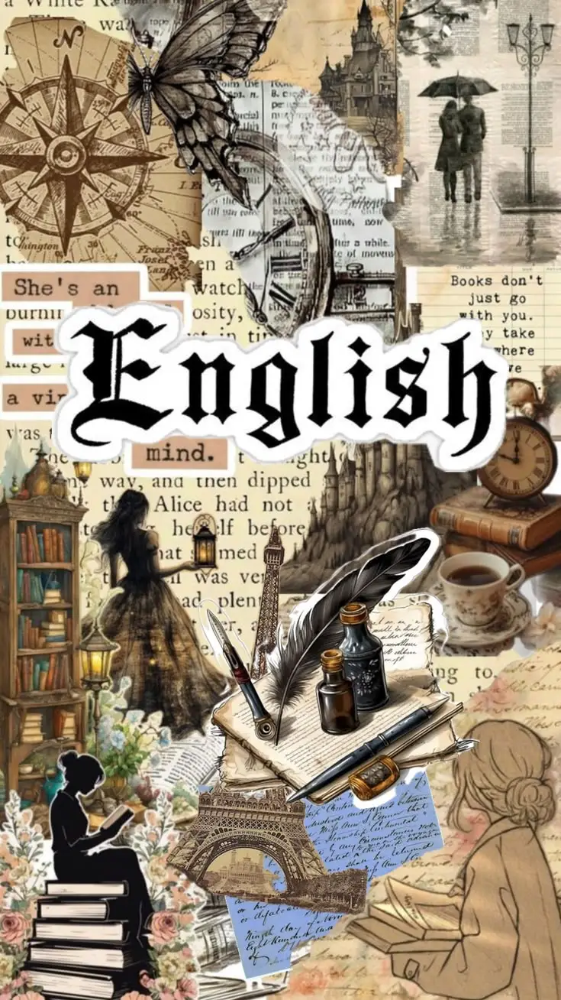
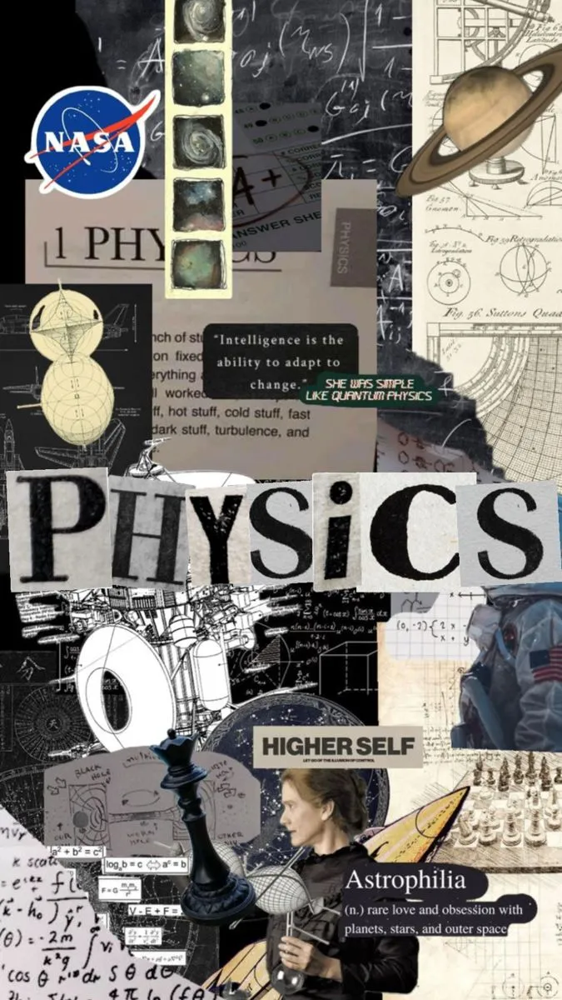
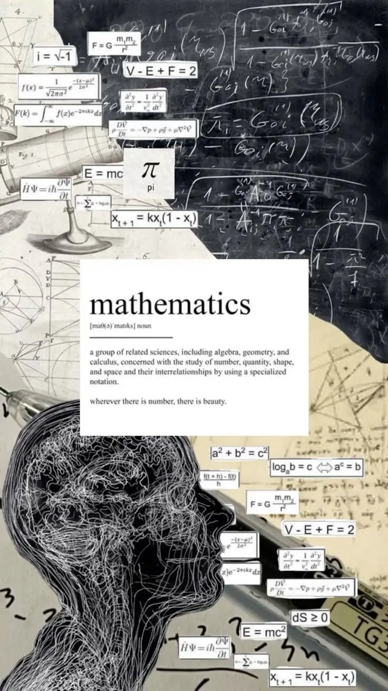

Baca materi secara bertahap. Gulir ke bawah untuk mempelajari seluruh topik.

Penjelajah MIPA
Menyusun konsep dan ringkasan materi TKA MIPA agar lebih mudah dipahami. Di halaman ini empat cabang ilmu — Matematika, Fisika, Kimia, dan Biologi — dikenalkan lewat tokoh kunci, ide utama, dan topik yang sering muncul di ujian.

Cabang Ilmu #1
Bahasa logika untuk berhitung, mengukur, dan memprediksi. Dari menghitung luas tanah, membangun jembatan, mengatur keuangan, sampai menjadi fondasi algoritma di balik setiap aplikasi dan game yang kita pakai sehari-hari.
Bermula dari Babilonia dan Mesir Kuno yang menghitung pajak dan luas tanah, berkembang lewat geometri Yunani, diperkaya dunia Islam abad pertengahan lewat aljabar, hingga kalkulus modern yang membuka jalan bagi fisika dan teknik.

Cabang Ilmu #2
Mempelajari materi, energi, gaya, dan gerak. Hampir semua teknologi yang kita pakai — listrik, mesin, ponsel, sampai roket ke luar angkasa — berdiri di atas hukum-hukum fisika.
Berawal dari pengamatan filsuf Yunani Kuno, memasuki babak ilmiah lewat hukum gerak Newton abad ke-17, berkembang pesat lewat elektromagnetik di abad ke-19, lalu direvolusi relativitas dan fisika kuantum di awal abad ke-20.

Cabang Ilmu #3
Mempelajari struktur, sifat, dan perubahan zat. Jadi dasar farmasi, industri material, energi, sampai hal-hal sederhana seperti sabun, pupuk, dan makanan yang kita konsumsi setiap hari.
Berakar dari alkimia kuno di Mesir dan dunia Arab yang mencoba mengubah logam biasa jadi emas, diubah menjadi ilmu sistematis oleh Lavoisier di akhir abad ke-18, hingga Mendeleev menyusun tabel periodik yang masih dipakai sampai sekarang.

Cabang Ilmu #4
Mempelajari makhluk hidup — struktur tubuh, proses kehidupan, hingga evolusi. Jadi fondasi kedokteran, pertanian, dan bioteknologi, dari vaksin sampai rekayasa genetika.
Dimulai dari pengamatan Aristoteles tentang makhluk hidup, direvolusi Vesalius lewat studi anatomi abad ke-16, ditemukannya dunia mikroorganisme oleh Leeuwenhoek lewat mikroskop, hingga genetika Mendel dan evolusi Darwin di abad ke-19.
Pembelajaran
Geser kartu untuk memilih bidang. Kartu tengah adalah materi aktif — kartu kiri-kanan jadi pratinjau. Tekan putar untuk membuka daftar topik lengkap, atau pilih dari deretan bawah.





Naikkan level dengan menyelesaikan tantangan dan kuis seputar Matematika, Fisika, Kimia, dan Biologi.
Pilih mapel, lalu kerjakan 5 soal. XP dan streak tersimpan di perangkatmu.
Belum dikerjakan hari ini
Tentang
Science Universe adalah ruang belajar interaktif untuk materi TKA MIPA — Matematika, Fisika, Kimia, dan Biologi. Di halaman utama kamu bisa mengenal cabang ilmu beserta tokoh kuncinya, sementara di halaman Materi tersedia ringkasan topik TKA yang bisa dibaca bertahap.
Ada juga Mini Game yang membuat proses belajar lebih seru lewat level, skill points, dan kuis singkat bertema MIPA.
Halaman ini masih dalam tahap pengembangan. Beberapa fitur, termasuk kuis dan game, terus dilengkapi dari waktu ke waktu.
Konsep, materi TKA, desain, dan pengembangan utama Science Universe.
Kontribusi pada pengembangan fitur dan dukungan teknis.
Ringkasan materi, ilustrasi rumus, dan referensi visual pada tiap topik di halaman ini disusun dengan mengacu pada koleksi papan Pinterest di atas.
Gambar specimen di halaman Home diambil dari pin Pinterest di atas.
Tema diatur dengan atribut data-theme pada <body> dan disimpan di localStorage. Catatan materi juga memakai localStorage per topik. Tidak memakai framework — murni HTML, CSS, dan JavaScript vanilla.
Pengaturan
Pengingat daily challenge.
Salin semua catatan materi ke clipboard, atau unduh sebagai file teks.